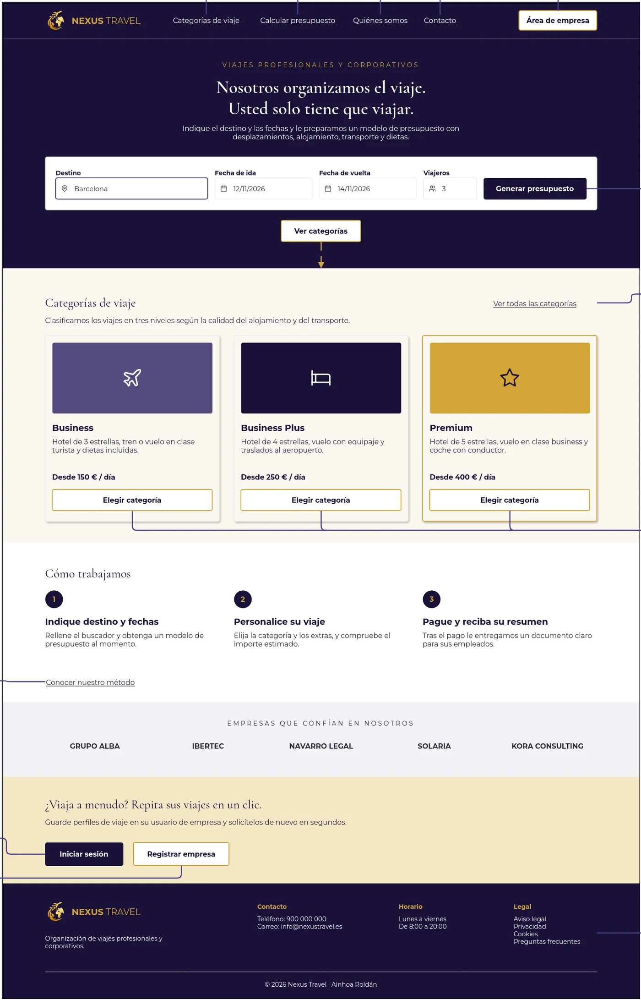

Proyecto académico · 2026
Del boceto al prototipo navegable
Una web para que una empresa pida un presupuesto de viaje en varios pasos. Estas son las dos pantallas que muestro: Inicio, donde se introduce el destino y se elige la categoría, y Personalización del viaje, donde se ajustan extras y preferencias con el importe actualizado al momento.
- Guía de estilo propia: logotipo, paleta (azul medianoche y dorado), tipografías y componentes.
- Wireframes en baja, media y alta fidelidad.
- Prototipo navegable de las dos pantallas, hecho en HTML y CSS.
HTML5CSS3Diseño UI/UXWireframesGuía de estilo

Pulsa para ampliarPantalla de inicio en alta fidelidad: buscador de viaje, categorías y cómo trabajamos.